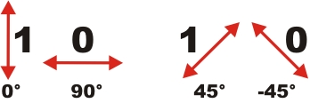
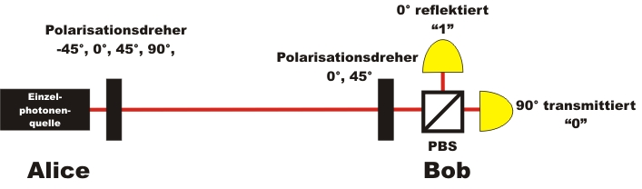
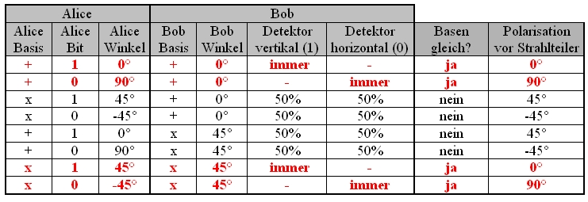
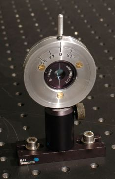
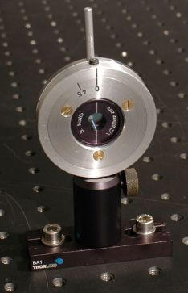
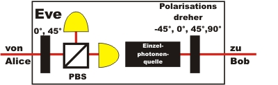
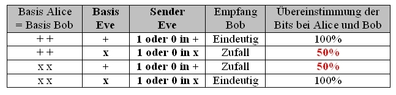

Quantenkryptographie Kapitel 3:
Schlüsselverteilung mit Nachweis eines Spions
Im letzten Kapitel zur Schlüsselverteilung mit einzelnen Photonen wurde gezeigt, wie das Grundprinzip der Schlüsselverteilung zwischen Alice und Bob funktioniert. Leider kann hier jedoch ein Spion unbemerkt den geheimen Schlüssel kopieren. Auf dieser Seite wird das System mit einer zweiten Basis zur Messung ergänzt, wodurch am Ende der Übertragung des Schlüssels Spione aufgedeckt werden können.
Einführung der zweiten Basis
Um Spione bei der Quantenkryptographie aufdecken zu können, müssen zusätzliche Elemente in das System eingefügt werden. Bob und Alice benutzen deshalb zwei Messbasen: Basis Plus (Bezeichung: +) und Basis X (Bezeichung: x). In jeder Basis gibt es eine fest definierte Polarisationsrichtung für die beiden Bits 1 oder 0. In der Basis + entspricht die Polarisation von 0° dem Bit "1" und die Polarisation von 90° dem Bit "0" (Abb. 1 links). In der Basis x entspricht die Polarisation 45° dem Bit "1" und die Polarisation -45° dem Bit "0" (Abb. 1 rechts).

Abb. 1: Messbasis + (links) und Messbasis x (rechts)
Für die Übertragung von einem Bit muss Alice nun zweimal zufällig wählen. Zunächst wählt sie zufällig, in welcher Basis sie das Bit versenden möchte: + oder x. Danach wählt sie zufällig, welches Bit sie in dieser Basis übertragen möchte: 1 oder 0. Alice benötigt somit vier verschiedene Winkel an ihrem Polarisationsdreher: 0°, 90° für die Basis + und 45°, -45° für die Basis x (Abb. 2). Auch Bob muss sich nun immer rein zufällig für eine Messbasis entscheiden: + oder x. Hierfür benötigt er einen Polarisationsdreher mit zwei festen Einstellungen in seiner Empfangseinheit. Auch Bob wählt rein zufällig entweder 0° für die Messbasis + oder 45 ° für die Messbasis x (Abb. 2).

Abb. 2: Skizze Experimente zur Quantenkryptographie
Wenn Alice das Photon in der Basis + mit der Polarisation 0° oder 90° verschickt und Bob die Basis + wählt, so gibt es eindeutige Ergebnisse. Wenn Alice das Photon in der Basis x mit der Polarisation -45° oder 45° verschickt und Bob die Basis x wählt, so gibt es wieder eindeutige Ergebnisse. Wenn Alice und Bob zufällig die gleichen Basen wählen, sind die übertragenen Daten eindeutig und können für den Schlüssel verwendet werden (Tabelle 1). Wenn Alice das Photon in der Basis + mit der Polarisation 0° oder 90° versendet und Bob die Basis x wählt, dann ist das Photon vor dem Strahlteiler diagonal polarisiert. Trifft ein diagonal polarisiertes Photon auf einen Polarisationsstrahlteiler, so wird das Photon mit der Wahrscheinlichkeit von 50% transmittiert oder mit der Wahrscheinlichkeit von 50% reflektiert. Das gleiche 50% zu 50% Verhalten am Strahlteiler ergibt sich, wenn Alice das Photon in der Basis x verschickt und Bob zur Messung die Basis + wählt. Wenn Alice und Bob verschiedene Basen wählen, sind die übertragenen Daten absolut zufällig und nicht zu gebrauchen (Tabelle 1).

Tabelle1: Übersicht über die verschiedenen Möglichkeiten
Schlüsselverteilung mit zweiter Basis im Experiment
Im unteren interaktiven Experiment kann das Ergebnis von Tabelle 1 mit realen Messdaten überprüft werden. Die beiden Polarisationsdreher (Abb. 3) können im interaktiven Experiment manuell mit Hilfe der grauen Taster eingestellt werden . Bei Alice kann die Polarisation -45°, 0°, 45° und 90° eingestellt werden (Abb. 3 links). Bei Bob kann die Polarisation 0° (Basis +) und 45° (Basis x) eingestellt werden (Abb. 3 mitte). Wie im realen Experiment können die Polarisationsdreher bei Alice und Bob auch automatisch betrieben werden (Abb. 3 rechts). Zur Übersicht der verschiedenen Messungen können sowohl bei Alice als auch bei Bob Listen eingeblendet werden.
Der erzeugte Schlüssel muss unvorhersagbar zufällig sein (Kapitel 1: Bedingung 3). Im manuellen Betrieb mit den Polarisationsdreher muss die zufällige Entscheidung durch den Experimentator (Alice bzw. Bob) gegeben sein. Alice und Bob dürfen die Einstellung nicht nach einer festen Regel festlegen sondern willkürlich. Wird der Polarisationsdreher bei Alice und Bob automatisch betrieben (Abb. 3 rechts), so muss dieser über einen absoluten Zufall angesteuert werden. Dieser absolute Zufall wird experimentell über ein Quantenzufallsgeerator erzeugt. Die Zufallszahlen wurde zuvor im Experiment Quantenzufall aufgenommen und gespeichert. Für die absolute Sicherheit muss die Quantenzufallszahl direkt parallel erzeugt werden und ohne Zwischenspeicherung auf den automatischen Polarisationsdreher übertragen werden.


Abb. 3: Polarisationsdreher für die Quantenkryptographie
links: Polarisationsdreher Alice -45°, 0°, 45°, 90°
mitte: Polarisationsdreher Bob 0° (Basis +) und 45° (Basis x)
rechts: automatischer Polarisationsdreher für Alice und Bob
Überzeugen Sie sich mit dem interaktiven Experiment zunächst, dass es bei gleicher Basenwahl eindeutige Messergebnisse gibt (a). Alice und Bob wählen die Messbasen immer rein zufällig und unabhängig voneinander. Während des Messvorgangs weiß keiner von beiden, welche Basis der Partner gewählt hat. Welche Möglichkeiten gibt es nun für Alice und Bob, damit beide nach der Übertragung die Einträge in den Listen mit den ungleichen Messbasen löschen und dadurch einen eindeutigen und geheimen Schlüssel erhalten (b)?
Beobachtung und Erklärung:
zu a)
Die Messergebnisse sind eindeutig, wenn Alice und Bob die gleiche Basis wählen. Bei unterschiedlicher Wahl der Basis kann nicht vorhergesagt werden, ob das Photon am Polarisationsstrahlteiler transmittiert oder reflektiert wird. Aufgrund von experimentellen Ungenauigkeiten und Messfehlern gibt es bei gleicher Wahl der Basis sehr selten (in 1% der Fälle) ein Ereignis, bei dem Alice z. B. die binäre 1 sendet und Bob die binäre 0 empfängt. Diese Fehler können später durch spezielle Fehleralgorithmen herausgefiltert werden (siehe unter "genauer Ablauf der Quantenkryptographie") .zu b)
Wie bekommen Alice und Bob aus den Einstellungen und Messergebnissen einen eindeutigen und geheimen Schlüssel?
Bei jedem gesendeten Photon notiert Alice in ihrer Liste, welche Basis sie gewählt hat und welches Bit sie übertragen hat. Bob notiert bei jedem Photon in seiner Liste, welche Basis er zur Messung gewählt hat und welcher Detektor das Photon registrierte. Alice und Bob besitzen somit zwei Listen mit den Einträgen: Photon - Basis - Bit (Abb. 4 links). Nach z. B. 100 Photonen telefonieren Alice und Bob miteinander und erzählen sich nur, bei welchem Photon sie in welcher Basis gemessen haben. Stimmen die Basen überein, so werden die Ergebnisse behalten. Stimmen die Basen nicht überein, so werden die Ergebnisse gelöscht (Abb. 4 rechts). Beim Telefonieren werden nur die verwendeten Basen verraten, das gesendete oder gemessene Bit bleibt geheim. Ein Spion könnte bei diesem Telefonat mithören, wobei ihm diese Information nichts bringt. Das eigentliche Ergebnis - die eindeutig übertragenen Bits - werden nicht verraten und sind noch immer geheim.Insgesamt werden nur 50% aller ursprünglichen Messergebnisse für den zufälligen Schlüssel verwendet. Der Kontakt zwischen Alice und Bob und das Löschen der falschen Ergebnisse kann natürlich auch durch einen Computer erfolgen. Mit Quantenzufallsgeneratoren und den beiden automatischen Polarisationsdrehern arbeitet das System völlig selbstständig. Mit unseren motorgetriebenen automatischen Polarisationsdrehern im Demonstrationsexperiment ist nur eine Rohdatenrate von weniger als 1 Bit pro Sekunde möglich. Für eine praktische Anwendung ist diese Datenrate viel zu gering. Eine Bitrate mit bis zu einigen Millionen Bit pro Sekunde ist mit elektrooptischen Polarisationsdrehern möglich, da diese keine mechanisch bewegten Teile haben.
Können sich sich Alice und Bob nun wirklich sicher sein, dass nur sie beide den Schlüssel kennen? Könnte nicht auch wieder der Spion den Schlüssel unbemerkt kopiert haben?
Abb. 4 links: Ergebnisse nach der Übertragung: Zufällige Basenwahl bei Alice und Bob.
Abb. 4 rechts: Ergebnisse nach dem Löschen der unterschiedlichen Basen.
Schlüsselverteilung mit einzelnen Photonen: Spion entdecken
Bisher kann noch nicht gesagt werden, ob sich der Aufwand mit den beiden Basen für die sichere Generierung des Schlüssels zwischen Alice und Bob wirklich gelohnt hat. Auch der Spion Eve kann ihre Abhöreinrichtung mit zusätzlichen Polarisationsdrehern für die Wahl der zwei Basen aufrüsten (Abb. 5) .

Abb. 5: Abhöreinrichtung von Eve mit zwei Basen
Der Spion Eve kann nun auch rein zufällig eine Basis wählen und das Photon messen. Eve muss allerdings sofort wieder ein neues Photon an Bob senden. In 50% der Fälle wählt Eve zur Messung die falsche Basis. Diesen durch Eve verursachten Fehler können Alice und Bob allerdings nur bemerken, wenn Alice und Bob die gleiche Basis gewählt haben. Bei gleicher Wahl der Basis sollten Alice und Bob immer eindeutige Ergebnisse erhalten. In Tabelle 2 werden alle Möglichkeiten skizziert, welche Fehler durch Eve verursacht werden können, wenn Alice und Bob die gleiche Basis wählen.

Tabelle 2: Möglichkeiten der Übertragung mit dem Lauscher Eve
Insgesamt gibt es bei gleicher Basenwahl von Alice und Bob durch die Anwesenheit von Eve in 25% der Fälle falsche Messergebnisse. Um Eve zu entdecken, müssen Alice und Bob nach dem Löschen der unterschiedlich gewählten Basen einige der eindeutigen Messergebnisse öffentlich überprüfen. Bei einem Fehler der eigentlich eindeutigen Daten von mind. 25% können Alice und Bob Eve enttarnen. Eve kann allerdings erst nach der Schlüsselübertragung entdeckt werden. Bisher wurde lediglich nur der Schlüssel generiert und dieser hat mit der eigentlichen Nachricht zur Verschlüsselung noch nichts zu tun. Im Fall der Anwesenheit eines Spions wird dieser Schlüssel einfach gelöscht und nicht zur Verschlüsselung der eigentlichen Nachricht verwendet. Die verwendeten Bits zur Überprüfung der Anwesenheit eines Spions werden natürlich aus dem eigentlichen Schlüssel gelöscht. Nach dem Ausschluss eines Spions und der Korrektur der Messfehler (ca. 1%) durch spezielle Fehlerkorrekturalgorithmen kann der Schlüssel zur eigentlichen Verschlüsselung zwischen Alice und Bob verwendet werden. Das genaue Prozedere von der Schlüsselverteilung bis zur verschlüsselten Nachricht wird im nächsten Kapitel unter Ablauf erläutert.
Ein Quantenkopierer für Eve?
Mit der oberen Spionageeinrichtung (Abb. 5) kann Eve immer entdeckt werden. Am besten wäre für Eve eine Maschine, die das Photon mit allen Eigenschaften exakt kopiert. Beim Kopieren des Photons darf die Polarisation des Originalphotons jedoch nicht verändert werden. Für Alice und Bob wäre es mit einem solchen Quantenkopierer nicht möglich, den Spion Eve aufzuspüren. Eve könnte jedes Photon zwischen Alice und Bob zwei mal kopieren und jeweils mit getrennten Basen messen. Durch das Telefonat von Alice und Bob mit Bekanntgabe der jeweiligen Basis wäre Eve im Besitz aller Bits des Schlüssels. Somit bietet das System der Quantenkryptographie trotz der beiden Basen wieder absolut keine Sicherheit mehr.
Doch gut, dass es die Quantenphysik gibt: Es ist niemals möglich einen unbekannten Quantenzustand perfekt zu kopieren. Erst 1982 wurde dieses quantenphysikalische Grundprinzip als "no-cloning-theorem" formuliert und theoretisch bewiesen [Woo82]. Die Polarisation des Photons von Alice kann somit niemals kopiert werden, ohne die Polarisation des ursprünglichen Photons zu verändern. Die Sicherheit des Systems Quantenkryptographie beruht auf den Grundlagen der Quantenphysik. Das Quantenkryptographiesystem mit einzelnen Photonen und der rein zufälligen Wahl von zwei Basen ist dank des "no-cloning-theorems" zu 100% sicher.
Im nächsten Kapitel wird der genaue Ablauf der Quantenkryptographie in einer Übersicht wiederholt. In weiteren Abschnitten geht es um den Stand der aktuellen Forschung und die verwendete Einzelphotonenquelle für das Demonstrationsexperiment.
Originaldaten aus dem Experiment: Zufallsdaten für Polarisationsdreher, Einzelereignisse, kontinuierliche Ereignisse
Zum Kapitel 4:Ablauf, Forschung und Einzelphotonenquelle [klick]
Zurück zur Übersicht
Autor: P. Bronner, August 2008